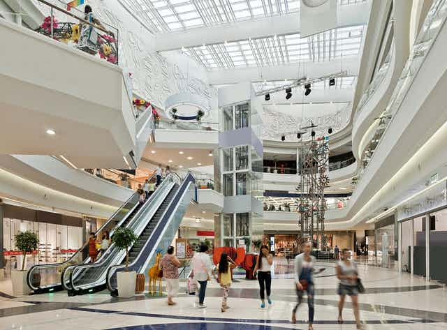

ABOUT PINE CITY MALL

Pine City Mall is the ultimate fashion, entertainment and dining destination in Durban. With over 430+ stores, 70 eateries and a host of exciting entertainment, visitors are spoilt for choice!
At Pine City you will find local South African retail, popular international brands such as Zara, Forever New, Cotton On, Superdry, Gant, and everything in between. Pine City also features an 18 cinema Ster Kinekor complex, IMAX Theatre, Funtubbles Family Funfair, Electric Avenue bowling, Action Karting, be.UP Park and much much more!
Prepare your senses for a world class experience at one of the largest shopping centres in the Southern Hemisphere.
Pine city mall is the largest shopping Mall ever built in a single phase, with over 130 000m2 of retail space, and is home to over 300 shops, many of which are flagship stores. In addition to a vast array of both local and international brands, the Mall also boats uniquely identified court areas made for easy shopping navigation, as well as exceptional access, location and visibility. Located in Waterfall City, the Pine city mall has an elegant design, which enhances its surrounding environment.

The Mall’s architectural appearance is inspired by Africa’s geological features and iconic landscapes. The Mall of Africa is well situated to serve as a dominant super-regional Mall. Our shoppers can look forward to a number of fabulous new stores on South African soil, including Zara Home and Armani Exchange, Fashion favourites include H & M and Versace.